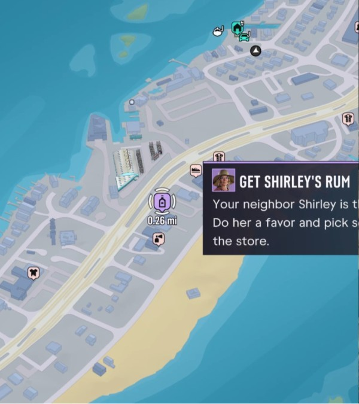
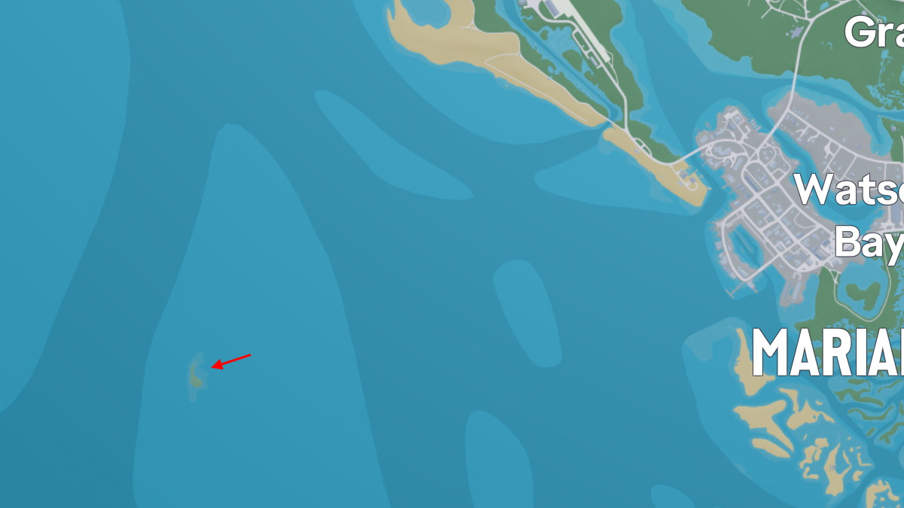
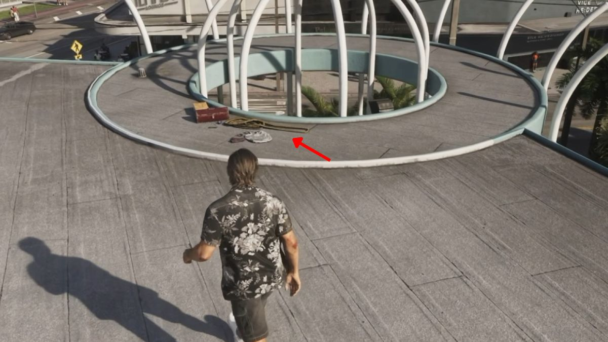
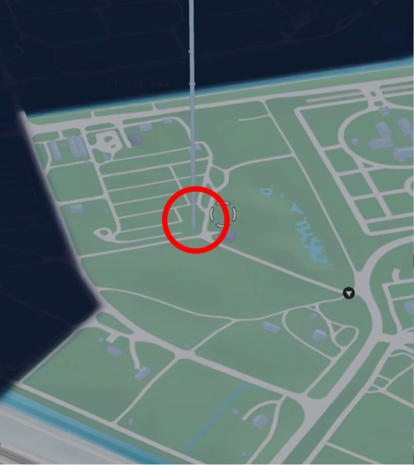
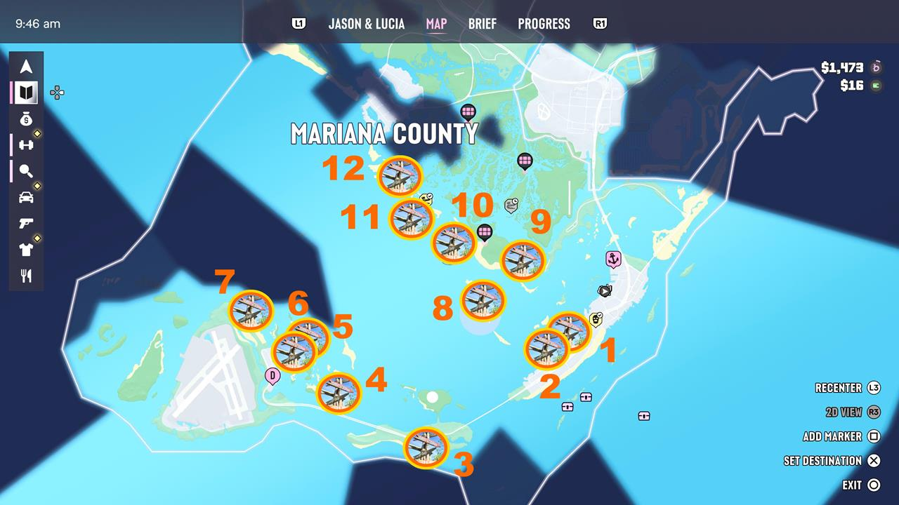

По главам
Глава 1: Лодка у дома Джейсона, Попугай за винным, Параплан на дереве, Книга у задней двери: мемуары гангстера из GTA IV, Запертый гараж, Постер в клубе The Vault: секретная станция, Морской монстр, Номер на угнанном Phoenix: отсылка к «Сайнфелду»
Глава 2: Машина на обочине ночью, Дом с гаражом, Гаражная распродажа, Флаер у мотеля Starlet
Глава 3: Уборщик Little Sam: камео Сэма Хаузера, Секретная станция The Sniper of La Perle
После финала: Читы: как вводить
ILeonida Keys
001
● Радиовышка Badger R&D
Key Lento, нужна открытая вся карта. Поднимись в комнату управления, опусти рычаг питания, нажми кнопку на стене и подожди у телевизора.
Key Lento, нужна открытая вся карта. Поднимись в комнату управления, опусти рычаг питания, нажми кнопку на стене и подожди у телевизора.
002
● 12 подстанций LPL
По всему штату, только своим ходом, без быстрого перемещения. На каждой синяя буква и кнопка или рычаг. Буквы по порядку: LIFEISPASSINGMEBY.
По всему штату, только своим ходом, без быстрого перемещения. На каждой синяя буква и кнопка или рычаг. Буквы по порядку: LIFEISPASSINGMEBY.
003
● Что жать на подстанциях
PS5: ○, ○, L1, □, L1, □, □, □, L1, △, ○, △.
Xbox: B, B, LB, X, LB, X, X, X, LB, Y, B, Y.
На каждой подстанции жми одну кнопку по порядку, с 1-й подстанции по 12-ю.
PS5: ○, ○, L1, □, L1, □, □, □, L1, △, ○, △.
Xbox: B, B, LB, X, LB, X, X, X, LB, Y, B, Y.
На каждой подстанции жми одну кнопку по порядку, с 1-й подстанции по 12-ю.
004
● SMS «U-235 REACTOR2 19-06»
Придёт после 12-й подстанции. Электростанция Tortoise Head, реактор 2, с 19:00 до 06:00 по игровым часам. Зайди внутрь.
Придёт после 12-й подстанции. Электростанция Tortoise Head, реактор 2, с 19:00 до 06:00 по игровым часам. Зайди внутрь.
005
● Лодка у дома Джейсона
Key Lento, двор Джейсона, с начала главы 1. Залезь на лодку, наведи камеру телефона или бинокль на экран навигатора.
Key Lento, двор Джейсона, с начала главы 1. Залезь на лодку, наведи камеру телефона или бинокль на экран навигатора.
скрин: Beebom
006
○ Попугай за винным
Key Lento, за магазином Three Sheets Liquor, глава 1. Поговори с ним и спроси про деньги Kingfisher.
Key Lento, за магазином Three Sheets Liquor, глава 1. Поговори с ним и спроси про деньги Kingfisher.

скрин: Beebom
007
○ Флаер в туалете
Corsair Key, к северу от Key Lento. Мужской туалет, левая кабинка. Отсканируй QR на флаере в WAiNK, на SMS ответь TRUTH, дальше по указаниям.
Corsair Key, к северу от Key Lento. Мужской туалет, левая кабинка. Отсканируй QR на флаере в WAiNK, на SMS ответь TRUTH, дальше по указаниям.
скрин: Beebom
008
○ Параплан на дереве
Bobcat Key, южнее Capri, у Bobcat Bight, самый край пляжа. Смотри вверх, отстрели три стропы. Можно с главы 1.
Bobcat Key, южнее Capri, у Bobcat Bight, самый край пляжа. Смотри вверх, отстрели три стропы. Можно с главы 1.
009
● Прыжок на авиабазу
Mile Zero Air Station, юго-запад Mariana County. Разгонись по куче земли у забора вдоль трассы или тарань главные ворота. На базе сразу 4 звезды.
Mile Zero Air Station, юго-запад Mariana County. Разгонись по куче земли у забора вдоль трассы или тарань главные ворота. На базе сразу 4 звезды.
010
○ Остров с SOS
Мелкий мангровый островок Leonida Keys, западнее основной группы. Подними телефон с песка и посмотри видео.
Мелкий мангровый островок Leonida Keys, западнее основной группы. Подними телефон с песка и посмотри видео.

скрин: Beebom
011
● Крабовая лаборатория
Pelican Valley, болота Grassrivers к северу от Keys. Сначала включи щиток снаружи. Пароль к компьютеру вырезан на дереве в хижине. Сейф: 00072. Лодочный сарай: 0212.
Pelican Valley, болота Grassrivers к северу от Keys. Сначала включи щиток снаружи. Пароль к компьютеру вырезан на дереве в хижине. Сейф: 00072. Лодочный сарай: 0212.
скрин: Beebom
012
● Заброшенный склад в Capri
Север Capri, заброшенный склад у Tortoise Lake. Приходи ночью, сначала сохранись. Оглуши прохожего, занеси на склад и положи на пентаграмму на полу. Держи под рукой коктейль Молотова или канистру.
Север Capri, заброшенный склад у Tortoise Lake. Приходи ночью, сначала сохранись. Оглуши прохожего, занеси на склад и положи на пентаграмму на полу. Держи под рукой коктейль Молотова или канистру.
Точки интереса: просто посмотреть
013
○ Журнал на террасе: йога-тренер Фабьен из GTA V
Дом Джейсона, столик у скамьи для жима. Журнал Body Copy, страница 3.
Дом Джейсона, столик у скамьи для жима. Журнал Body Copy, страница 3.
014
○ Книга у задней двери: мемуары гангстера из GTA IV
Дом Джейсона, столик у задней двери, глава 1. Прочитай.
Дом Джейсона, столик у задней двери, глава 1. Прочитай.
015
● JoyStation: отсылка к Clair Obscur и «Маяку»
Дом Джейсона. Запусти игру Tenebrae Lux.
Дом Джейсона. Запусти игру Tenebrae Lux.
016
● Комикс RX-Men №13: пародия на «Людей Икс»
Магазин 24/7 на севере Key Lento, стойка с журналами.
Магазин 24/7 на севере Key Lento, стойка с журналами.
017
○ Книга в Brian's Marina: Флако Эрнандес из RDR 2
Key Lento, Brian's Marina. Найди книгу внутри и прочитай.
Key Lento, Brian's Marina. Найди книгу внутри и прочитай.
018
○ Сувенирные лавки: мишка Тревора и рубашка Томми
Любая сувенирная лавка на Leonida Keys. Осмотри полки.
Любая сувенирная лавка на Leonida Keys. Осмотри полки.
IIVice City
019
○ Запертый гараж
Vespucci Island, западнее Vice Beach. Вскрой гараж. Пригони то, что внутри, Мозесу до первой встречи с ним в главе 2.
Vespucci Island, западнее Vice Beach. Вскрой гараж. Пригони то, что внутри, Мозесу до первой встречи с ним в главе 2.
020
○ Мемориал Руссо
Downtown, мемориал президента Руссо, отсюда цепочка. Кейпад на дереве: 085355. Дальше: 030712.
Downtown, мемориал президента Руссо, отсюда цепочка. Кейпад на дереве: 085355. Дальше: 030712.
021
○ Пассажир в сером костюме
Катайся за Джейсона по Vice Beach. Если в машину сядет мужчина в сером костюме и очках, вези куда скажет.
Катайся за Джейсона по Vice Beach. Если в машину сядет мужчина в сером костюме и очках, вези куда скажет.
022
● Постер в клубе The Vault: секретная станция
Downtown, клуб The Vault, красный постер сразу за входом. С главы 1. Отсканируй в WAiNK (R1 / RB), после этого в радио появится The Vault Radio.
Downtown, клуб The Vault, красный постер сразу за входом. С главы 1. Отсканируй в WAiNK (R1 / RB), после этого в радио появится The Vault Radio.
Точки интереса: просто посмотреть
023
● Квартира Декстера Моргана: Trinity Apartments
Washington Island, рядом с магазином Top Fun Drones. Внутрь нельзя, лезь на крышу.
Washington Island, рядом с магазином Top Fun Drones. Внутрь нельзя, лезь на крышу.

скрин: Beebom
024
○ Особняк Томми Версетти на Starfish Island
Starfish Island, особняк у воды. Внутрь не пускают, смотри снаружи.
Starfish Island, особняк у воды. Внутрь не пускают, смотри снаружи.
скрин: Beebom
025

026
○ Уборщик Little Sam: камео Сэма Хаузера
Глава 3, миссия 25 «Boobie Time». Смотри на уборщика в клубе.
Глава 3, миссия 25 «Boobie Time». Смотри на уборщика в клубе.
IIIСевер и глубинка
027
● Вышка севернее Hamlet
South Vice-Dale County, самая высокая вышка к северу от Hamlet. Лезть минут семь. Наверху: △/Y взять, L2 + R2 бросить.
South Vice-Dale County, самая высокая вышка к северу от Hamlet. Лезть минут семь. Наверху: △/Y взять, L2 + R2 бросить.

скрин: Beebom
028
● Рык в болотах
Дорога южнее Hamlet, юго-восточнее Cottonmouth Lake. Второе место: островок южнее Watson Bay. Иди на звук. Потом ищи постеры по штату и звони по номеру.
Дорога южнее Hamlet, юго-восточнее Cottonmouth Lake. Второе место: островок южнее Watson Bay. Иди на звук. Потом ищи постеры по штату и звони по номеру.
скрин: Beebom
029
● Машина на обочине ночью
Kelly County, грунтовка северо-западнее мотеля Starlet, восточнее Port Gellhorn. Нужна глава 2, ночь около 02:00. Машина с мигающими фарами, бывает не каждую ночь.
Kelly County, грунтовка северо-западнее мотеля Starlet, восточнее Port Gellhorn. Нужна глава 2, ночь около 02:00. Машина с мигающими фарами, бывает не каждую ночь.
скрин: Beebom
030
● Дом с гаражом
Leonard County, юго-западнее Belville. Заходи через гараж. Удобнее всего после глав 2-3.
Leonard County, юго-западнее Belville. Заходи через гараж. Удобнее всего после глав 2-3.
скрин: Beebom
031
○ Гаражная распродажа
Юг Port Gellhorn, Orchard Avenue, у Dirt Merchants. Синий дом с забором, белый диван. Глава 2.
Юг Port Gellhorn, Orchard Avenue, у Dirt Merchants. Синий дом с забором, белый диван. Глава 2.
скрин: Beebom
032
● Руины у Mount Kalaga
Район Moreau, руины Lawton Co. Paper Mill к северу от Mount Kalaga, место для медитации. Фиолетовый брезент: взаимодействуй, потом смотри вверх и прыгай с руин.
Район Moreau, руины Lawton Co. Paper Mill к северу от Mount Kalaga, место для медитации. Фиолетовый брезент: взаимодействуй, потом смотри вверх и прыгай с руин.
скрин: Beebom
033
○ Флаер у мотеля Starlet
Мотель Starlet, у ресепшена, флаер Pilot Wanted, глава 2. Дальше ферма McKittrick во Frogswater. Вернись через несколько игровых недель.
Мотель Starlet, у ресепшена, флаер Pilot Wanted, глава 2. Дальше ферма McKittrick во Frogswater. Вернись через несколько игровых недель.
034
● Сбежавшая корова
Западнее Ambrosia, южнее Frogswater. Играй за Лусию. Фермер плачет у дороги: догони корову.
Западнее Ambrosia, южнее Frogswater. Играй за Лусию. Фермер плачет у дороги: догони корову.
скрин: Beebom
035

036

037
○ Компаунд Фредди
Запад North Leonard County. Внутрь так просто не пустят, придётся повозиться. Загляни ещё раз, когда будет ураган.
Запад North Leonard County. Внутрь так просто не пустят, придётся повозиться. Загляни ещё раз, когда будет ураган.
скрин: Beebom
038
● Дом с открытым гаражом в Port Gellhorn
Kelly County, север Port Gellhorn, дом с открытым гаражом и компанией внутри. С 00:00 до 04:00. Присоединись и выпей с ними, в диалоге выбери «Rock On». Поезжай с ними в фургоне к костру и смотри в огонь.
Kelly County, север Port Gellhorn, дом с открытым гаражом и компанией внутри. С 00:00 до 04:00. Присоединись и выпей с ними, в диалоге выбери «Rock On». Поезжай с ними в фургоне к костру и смотри в огонь.
039
○ Таблички Hollow Earth
Kelly County, западнее Emerald Springs. Иди по табличкам Hollow Earth до конца тропы. Поговори с продавцом: зажми L2.
Kelly County, западнее Emerald Springs. Иди по табличкам Hollow Earth до конца тропы. Поговори с продавцом: зажми L2.
Точки интереса: просто посмотреть
040
● Монумент в Manifest Canyon: загадка в духе Mount Chiliad
Север каньона, западнее трассы SR-73, севернее Port Gellhorn. Осмотри символы на основании или приходи ночью в грозу.
Север каньона, западнее трассы SR-73, севернее Port Gellhorn. Осмотри символы на основании или приходи ночью в грозу.
скрин: Beebom
041
○ Мини-гольф на Valentine Drive: Артур Морган из RDR 2
Leonard County, рядом с картингом Hot Skidz. Пройди по деревянному настилу, смотри под ноги.
Leonard County, рядом с картингом Hot Skidz. Пройди по деревянному настилу, смотри под ноги.
скрин: Beebom
042
○ Вершина Mount Kalaga: мини-Стоунхендж
Самый север карты. Поднимись на вершину.
Самый север карты. Поднимись на вершину.
043
○ Таверна Jacob's: вестерн про New Austin из RDR
Millport. Найди книгу и прочитай.
Millport. Найди книгу и прочитай.
044
○ Остановка-ананас на Cicada Avenue: дом Губки Боба
Рядом с Bluegrass. Жёлтая остановка у дороги.
Рядом с Bluegrass. Жёлтая остановка у дороги.
IVМоре
045
● Лай в открытом море
Уплыви подальше от берега, брось лодку и поплавай несколько минут. Лучше всего у Key Lento. Как услышишь лай, залезай к нему и не слезай до самого берега.
Уплыви подальше от берега, брось лодку и поплавай несколько минут. Лучше всего у Key Lento. Как услышишь лай, залезай к нему и не слезай до самого берега.
046
● Маяк St. Lucia
Little Hardin Island, северная сторона, ночью. Потом вернись к маяку после полуночи, залезь наверх и около 01:30 смотри в бинокль на море.
Little Hardin Island, северная сторона, ночью. Потом вернись к маяку после полуночи, залезь наверх и около 01:30 смотри в бинокль на море.
047
○ Указатель у пианино
Острова южнее Cottonmouth Lake и Gambit Bay, тот, где пианино. Иди вглубь деревьев.
Острова южнее Cottonmouth Lake и Gambit Bay, тот, где пианино. Иди вглубь деревьев.
скрин: Beebom
048
○ Морской монстр
Глава 1, миссия «Island Dreams», задание Кентона. Под водой у затонувшего корабля смотри на дно. В свободной игре почти не встречается.
Глава 1, миссия «Island Dreams», задание Кентона. Под водой у затонувшего корабля смотри на дно. В свободной игре почти не встречается.
VТелефон, радио, журналы
049
○ Секретная станция The Sniper of La Perle
С главы 3. Отсканируй в WAiNK четыре постера на севере Vice City: тату-салон TWA Ponya, Drip Drops, ресторан Aunt Zola's Soul Food и Jack of Hearts, второй этаж, студия звукозаписи. Телефон сам подскажет, когда постер рядом.
С главы 3. Отсканируй в WAiNK четыре постера на севере Vice City: тату-салон TWA Ponya, Drip Drops, ресторан Aunt Zola's Soul Food и Jack of Hearts, второй этаж, студия звукозаписи. Телефон сам подскажет, когда постер рядом.
Точки интереса: просто посмотреть
050
○ Рингтон Wind Chimes: телефон Майкла из GTA V
Телефон -> Настройки -> Рингтоны, выбери Wind Chimes.
Телефон -> Настройки -> Рингтоны, выбери Wind Chimes.
051
● Пост про RAC 7: шутка про GTA 7
Snapmatic, листай ленту, ищи Barnyard Blue.
Snapmatic, листай ленту, ищи Barnyard Blue.
052
○ Аккаунт badlife999: отсылка к Juice WRLD
Snapmatic, найди аккаунт badlife999.
Snapmatic, найди аккаунт badlife999.
053
○ Ведущий Vice City FM: «Странный Эл» Янкович
Включи Vice City FM и послушай ведущего.
Включи Vice City FM и послушай ведущего.
054
○ DJ Dicky на Kaleidoscope FM: Джереми Айронс
Включи Kaleidoscope FM и послушай DJ Dicky, голос узнаешь сразу.
Включи Kaleidoscope FM и послушай DJ Dicky, голос узнаешь сразу.
055
○ Подкаст Final Act: Уэйд из GTA V
Найди подкаст Final Act, выпуск «Juggling with the Turd», и послушай интервью.
Найди подкаст Final Act, выпуск «Juggling with the Turd», и послушай интервью.
056
○ Карточки рестлеров B.A.M.
Карточки раскиданы по всей Leonida, собирай по пути.
Карточки раскиданы по всей Leonida, собирай по пути.
057
○ Номер на угнанном Phoenix: отсылка к «Сайнфелду»
Глава 1, миссия 5. Посмотри на номерной знак.
Глава 1, миссия 5. Посмотри на номерной знак.
VIУправление: неочевидные кнопки
058
○ △/Y дважды при выходе из машины
Двигатель остаётся заведённым.
Двигатель остаётся заведённым.
059
○ Удерживать ○/B у машины или стены
Облокотиться.
Облокотиться.
060
○ L3 у перил
Облокотиться на перила.
Облокотиться на перила.
061
○ Удерживать ○/B на краю бассейна или причала
Сесть.
Сесть.
062
○ Подойти к капоту или багажнику
Толкать машину.
Толкать машину.
063
○ L3, потом удерживать □/X у перевёрнутой машины
Перевернуть обратно. Работает с лодками и гидроциклами.
Перевернуть обратно. Работает с лодками и гидроциклами.
064
○ □/X на ходу
Открыть дверь и сбить ею прохожего.
Открыть дверь и сбить ею прохожего.
065
○ ○/B в машине
Фары. Удерживать: пригнуться.
Фары. Удерживать: пригнуться.
066
○ Крестовина влево дважды в машине
Радио вкл/выкл.
Радио вкл/выкл.
067
○ Удерживать Вниз, Options, удерживать ○/B
Машина едет сама.
Машина едет сама.
068
○ R3 дважды рядом с машинами
Крикнуть на водителей.
Крикнуть на водителей.
069
○ Удерживать L2/LT + R3
Вид от первого лица.
Вид от первого лица.
070
○ Удерживать L1/LB + крестовина
Надеть кепку по-другому.
Надеть кепку по-другому.
071
○ Крестовина влево с напитком в руке
Переложить напиток в другую руку.
Переложить напиток в другую руку.
072
○ Удерживать R2/RT в драке
Схватить противника.
Схватить противника.
073
○ L2 + R1 на улице
Показать средний палец.
Показать средний палец.
074
○ Наушники в Zeke's Gadgets
Купи за ~$150. Музыка играет и пешком.
Купи за ~$150. Музыка играет и пешком.
VIIЧиты (только после финала)
075
● Как вводить коды
Работает только после финальной миссии. Достань телефон (крестовина вверх), на главном экране зажми L1 + R1 (на Xbox LB + RB) и набери код крестовиной. Каждый чит ещё надо открыть: Пауза, R1/RB до вкладки Progress, пункт Cheats, там у каждого написано условие. С включённым читом игра не сохраняется и трофеи не выпадают, так что сохранись заранее.
Работает только после финальной миссии. Достань телефон (крестовина вверх), на главном экране зажми L1 + R1 (на Xbox LB + RB) и набери код крестовиной. Каждый чит ещё надо открыть: Пауза, R1/RB до вкладки Progress, пункт Cheats, там у каждого написано условие. С включённым читом игра не сохраняется и трофеи не выпадают, так что сохранись заранее.
076
● $250 000
↑ → ↓ ← ↑ ← ↓ → (Открыть: пройди сюжет.)
↑ → ↓ ← ↑ ← ↓ → (Открыть: пройди сюжет.)
077
● Бесконечный фокус
↓ ↑ ↑ ↓ ↑ ↓ ↑ ↓ ↑ → (Открыть: пройди сюжет.)
↓ ↑ ↑ ↓ ↑ ↓ ↑ ↓ ↑ → (Открыть: пройди сюжет.)
078
● Удары и пули отбрасывают
↓ ↑ ← ← → ↓ ↓ ↑ ↓ (Открыть: пройди сюжет.)
↓ ↑ ← ← → ↓ ↓ ↑ ↓ (Открыть: пройди сюжет.)
079
● Бронежилет
↓ ↑ ← ↑ ↑ ↑ ↑ ↑ ↓ ↓ (Открыть: 100 тренировок.)
↓ ↑ ← ↑ ↑ ↑ ↑ ↑ ↓ ↓ (Открыть: 100 тренировок.)
080
● Поднять уровень Heat
← ↓ → ↓ ↑ ↓ ↑ (Открыть: 25 раз уйди от 3 звёзд.)
← ↓ → ↓ ↑ ↓ ↑ (Открыть: 25 раз уйди от 3 звёзд.)
081
● Поднять розыск
← ↓ → ↓ ↑ → ↑ (Открыть: 50 раз уйди от 3 звёзд.)
← ↓ → ↓ ↑ → ↑ (Открыть: 50 раз уйди от 3 звёзд.)
082
○ Опьянение
↑ ← → ↑ ↑ ← → ↑ ← → (Открыть: потрать $2500 на алкоголь.)
↑ ← → ↑ ↑ ← → ↑ ← → (Открыть: потрать $2500 на алкоголь.)
083
● Полный боезапас
↓ ↑ → ↓ ← ← ↑ ↑ ↓ ← (Открыть: 25 бронзовых медалей в тирах.)
↓ ↑ → ↓ ← ← ↑ ↑ ↓ ← (Открыть: 25 бронзовых медалей в тирах.)
084
● Бесконечные патроны
↓ ↑ → ↓ ← ← ↑ ↓ ↓ ↓ (Открыть: 25 серебряных медалей в тирах.)
↓ ↑ → ↓ ← ← ↑ ↓ ↓ ↓ (Открыть: 25 серебряных медалей в тирах.)
085
● Без перезарядки
↓ ↑ → ↓ ← ← ↑ ↓ ↓ ↑ (Открыть: 25 золотых медалей в тирах.)
↓ ↑ → ↓ ← ← ↑ ↓ ↓ ↑ (Открыть: 25 золотых медалей в тирах.)
086
● Взрывающиеся мячи
↓ ↑ ← ← → ↓ ↓ ↑ → (Открыть: задень взрывом 20 врагов.)
↓ ↑ ← ← → ↓ ↓ ↑ → (Открыть: задень взрывом 20 врагов.)
087
● Машина отбрасывает при ударе
↓ ↑ ← ← → ↓ ← ↑ ↓ (Открыть: задави машиной 25 человек.)
↓ ↑ ← ← → ↓ ← ↑ ↓ (Открыть: задави машиной 25 человек.)
088
● Сменить погоду
↓ → ↑ ↓ → ↑ → (Открыть: по GamesRadar надо открыть всю карту, GTAside условие пока не подтвердил.)
↓ → ↑ ↓ → ↑ → (Открыть: по GamesRadar надо открыть всю карту, GTAside условие пока не подтвердил.)
089
● Машина Maibatsu Boomazoom
← ↑ → ↓ ← ← ↑ ← (Открыть: 5 испытаний на покупки.)
← ↑ → ↓ ← ← ↑ ← (Открыть: 5 испытаний на покупки.)
090
● Машина MTL Pumper
← ↑ → ↓ ← → → ↑ (Открыть: найди MTL Pumper (список в меню Progress).)
← ↑ → ↓ ← → → ↑ (Открыть: найди MTL Pumper (список в меню Progress).)
091
● Бульдозер HVY
← ↑ → ↓ ← → → ↓ (Открыть: найди HVY Bulldozer (список в меню Progress).)
← ↑ → ↓ ← → → ↓ (Открыть: найди HVY Bulldozer (список в меню Progress).)
092
● Фильтр Cataclysm: дым и мгла
↓ ↓ ↑ → → ↑ ← ← → → (Открыть: найди Vamos Марты (список в меню Progress).)
↓ ↓ ↑ → → ↑ ← ← → → (Открыть: найди Vamos Марты (список в меню Progress).)
093
● Фильтр Dollhouse: яркий и узкий кадр
↓ ↓ ↑ → → ↑ ← ← ↓ → (Открыть: проведи 8 часов с напарником.)
↓ ↓ ↑ → → ↑ ← ← ↓ → (Открыть: проведи 8 часов с напарником.)
094
● Фильтр Faded Glory: старый цветной телевизор
↓ ↓ ↑ → → ↑ ← ← ← → (Открыть: ограбь с напарником 50 магазинов.)
↓ ↓ ↑ → → ↑ ← ← ← → (Открыть: ограбь с напарником 50 магазинов.)
VIIIWAiNK: сканируй приложением
01Рождественский дом - Key Lento, самая западная улица
02Шале Plunge Masters - та же улица, мурал за сараем
03Abismo Key - через мангры на юг до пляжа
04Судно у берега - юго-восточный остров Permit Keys, мыс
05Пляжная вечеринка - центральные острова Permit Keys, северный край
06Указатель - рядом с вечеринкой, за деревьями
07Goose Key - Mile Zero Air Station, вдоль берега на северо-восток
08Пианино - острова южнее Cottonmouth Lake и Gambit Bay
09Яркий пруд - болото севернее, у таблички-предупреждения
10Акулы на пляже - Wetman Bay, южные острова
11Wetman Bay - остров севернее акул
12Ферма NoFlusher - западнее болотной базы Kingfisher
